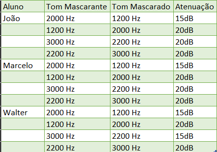

Lab 5 - Percepção Auditiva

Este laboratório está dividido em 4 partes: a primeira aborda um teste de audiometria; a segunda parte é um teste de faixa audível,; o terceiro é um teste de localização de fonte sonora e por fim, o quarto teste aborda o mascaramento de tons harmônicos.
Teste de Audiometria
Neste teste, utilizando fones envolventes de alta qualidade, os integrantes do grupo realizam o procedimento proposto por (PIGEON, S., 2016) no qual, após realizar uma calibração de áudio, o integrante deve para diversos tipos de frequências, verificar qual a intensidade de som que o mesmo começa a identificar o áudio que está sendo reproduzido.
Realizando este procedimento para cada uma das orelhas separadamente e em conjunto, é gerado um padrão audiométrico no que relaciona a frequência do som utilizado com a perda de audição do integrante. A seguir estão os resultados para os integrantes do grupo
Resultados
Adinan
Foram realizados dois testes, um na UFABC, em ambiente ruidoso (para outra disciplina) e outro em casa, em local silencioso.
Resultado casa e universidade, respectivamente:
Marcelo
Resultado na universidade:
João
Foram realizados dois testes, um na UFABC, em ambiente ruidoso, e outro em casa, em local silencioso.
Resultado casa e universidade, respectivamente:
Walter
Resultado na universidade:
Teste de faixa audível
Neste teste, também utilizando fones envolventes, cada integrante verifica a sua variabilidade de frequência ouvida a partir do vídeo a seguir:
Cada integrante realizou o teste 3 vezes, verificando a frequência mínima e máxima audível, cujo os resultados encontram-se a seguir:
Resultados
Adinan
Primeiro teste: De 20 Hz a 16700 Hz
Segundo teste: De 20 Hz a 16850 Hz
Terceiro teste: De 20 Hz a 17100 Hz.
Resultado final: De 20 Hz a 16883 Hz.
Marcelo
Primeiro teste: De 35 Hz a 18210 Hz
Segundo teste: De 35 Hz a 18142 Hz
Terceiro teste: De 33 Hz a 18200 Hz.
Resultado final: De 34 Hz a 18184 Hz.
João
Primeiro teste: De 30 Hz a 16292 Hz
Segundo teste: De 35 Hz a 16726 Hz
Terceiro teste: De 33 Hz a 16075 Hz.
Resultado final: De 33 Hz a 16364 Hz.
Walter
Primeiro teste: De 40 Hz a 18000 Hz
Segundo teste: De 30 Hz a 18293 Hz
Terceiro teste: De 31 Hz a 17991 Hz.
Resultado final: De 34 Hz a 18094 Hz.
Teste de Localização de fonte sonora
Utilizando um capacete com transferidor acoplado e uma venda, um dos integrantes é colocado sentando no centro enquanto os outros realizam a emissão de três sons (som de chaves, sinos e cacarejo de galinha) variando a direção da fonte sonora sem o conhecimento do integrante no centro. Desta forma, o integrante deve apontar o ângulo no qual ele percebe que está a fonte sonora e é realizada a comparação com o ângulo real da fonte sonora.
Teste Mascaramento de Tons Harmônicos
Utilizando um script no Matlab, dois tons de frequências distintas são gerados. O primeiro é o tom mascarante e o tom mascarado. Inicialmente, os dois tons tem intensidade igual, de modo que é possível identificar cada um deles de maneira distinta. Desta forma, realizando a atenuação do tom mascarado, os dois tons se mesclam, ou seja, o tom mascarante "encobre" o tom mascarado, de modo a ouvirmos apenas um tom. Atenuando o tom mascarado em passos de 5dB e alterando as frequências dos tons, cada um dos integrantes verifica o fator de atenuação em que ocorre o encobrimento do tom.
Resultados
Marcelo
Atenuação de tom mascarante 2000Hz e mascarado de 1200Hz:
Fator de atenuação de: -15dB
Atenuação de tom mascarante 1200Hz e mascarado de 2000Hz:
Fator de atenuação de: -20dB
Atenuação de tom mascarante 3000 Hz e mascarado de 2200 Hz:
Fator de atenuação de: -20dB
Atenuação de tom mascarante 2200Hz e mascarado de 3000Hz:
Fator de atenuação de: -20dB
João
Atenuação de tom mascarante 2000Hz e mascarado de 1200Hz:
Fator de atenuação de: -15dB
Atenuação de tom mascarante 1200Hz e mascarado de 2000Hz:
Fator de atenuação de: -20dB
Atenuação de tom mascarante 3000 Hz e mascarado de 2200 Hz:
Fator de atenuação de: -20dB
Atenuação de tom mascarante 2200Hz e mascarado de 3000Hz:
Fator de atenuação de: -20dB
Walter
Atenuação de tom mascarante 2000Hz e mascarado de 1200Hz:
Fator de atenuação de: -15dB
Atenuação de tom mascarante 1200Hz e mascarado de 2000Hz:
Fator de atenuação de: -20dB
Atenuação de tom mascarante 3000 Hz e mascarado de 2200 Hz:
Fator de atenuação de: -20dB
Atenuação de tom mascarante 2200Hz e mascarado de 3000Hz:
Fator de atenuação de: -20dB
Tabela
Por fim, o roteiro utilizado no laboratório.